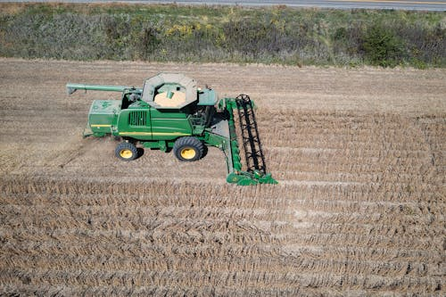

Connecting South Africans with H-2A and H-2B Job Opportunities Abroad.

This website works best on mobile devices.
Scan the QR code below to open this site on your mobile device:
Or, continue using the website on your PC.
About Global Work Bridge
- Welcome to Global Work Bridge, your trusted platform designed to help South Africans find legitimate H-2A and H-2B work opportunities abroad. At Global Work Bridge, we’re passionate about connecting South Africans with valuable international work experiences. Whether you're seeking agricultural work in the U.S. (H-2A) or non-agricultural seasonal employment (H-2B), our platform is here to guide you through the process and make your overseas job search as smooth and transparent as possible.
What Sets Us Apart
- We believe in not just helping individuals but also making a difference in our communities. A portion of the funds we receive goes towards supporting local charities that uplift and empower South African communities. By using Global Work Bridge, you're not only securing a better future for yourself but also contributing to the well-being of others.
Our Mission
- Our goal is to provide South Africans with a reliable and supportive platform for finding meaningful work abroad while giving back to those in need. Every time someone uses our services, they’re helping create opportunities that go beyond the workplace. We ensure that the services we provide are transparent, legitimate, and beneficial for all. A small portion of the funds we receive helps support the operational costs and maintenance of the platform, ensuring we can continue offering our services to a wider audience. We also dedicate a part of the revenue to charity, reinforcing our commitment to social responsibility.
Join Us Today
At Global Work Bridge, we’re committed to your success and the success of our communities. Let’s work together to build a brighter future for you and for those who need it most.